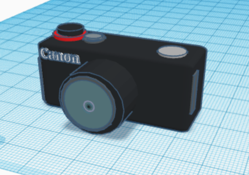
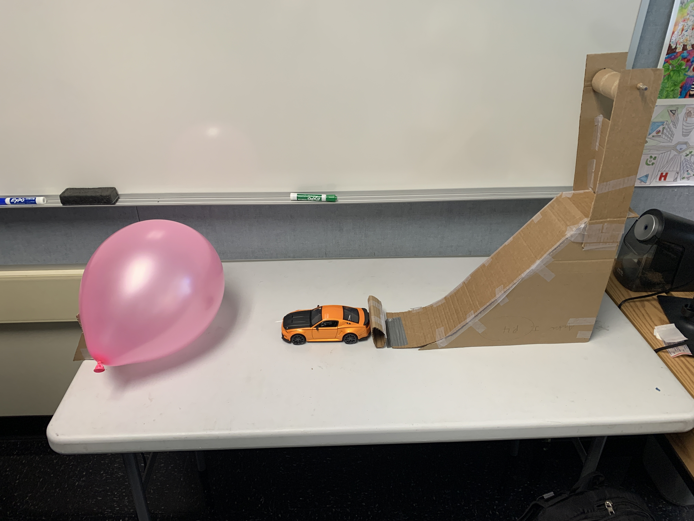
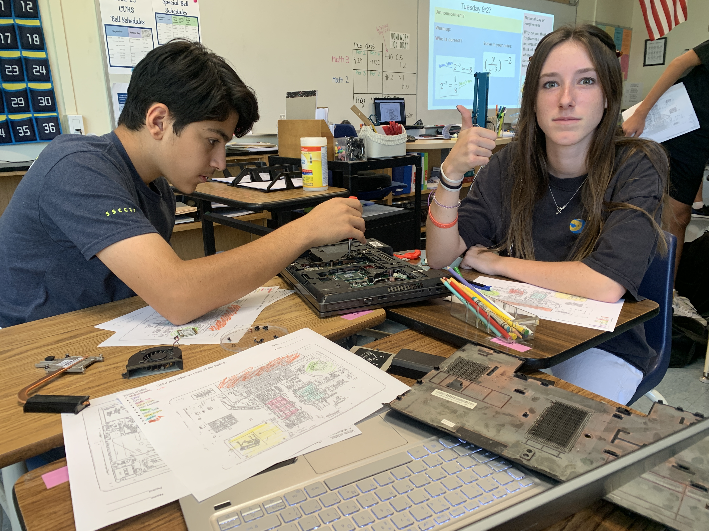
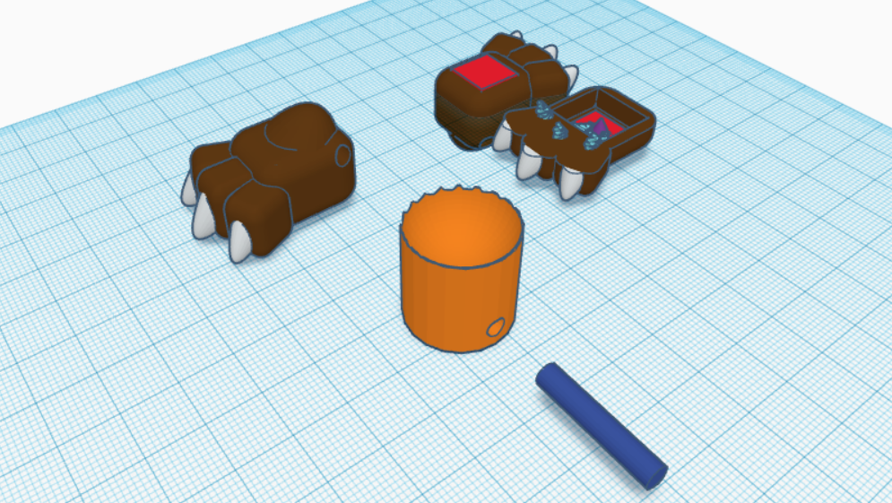
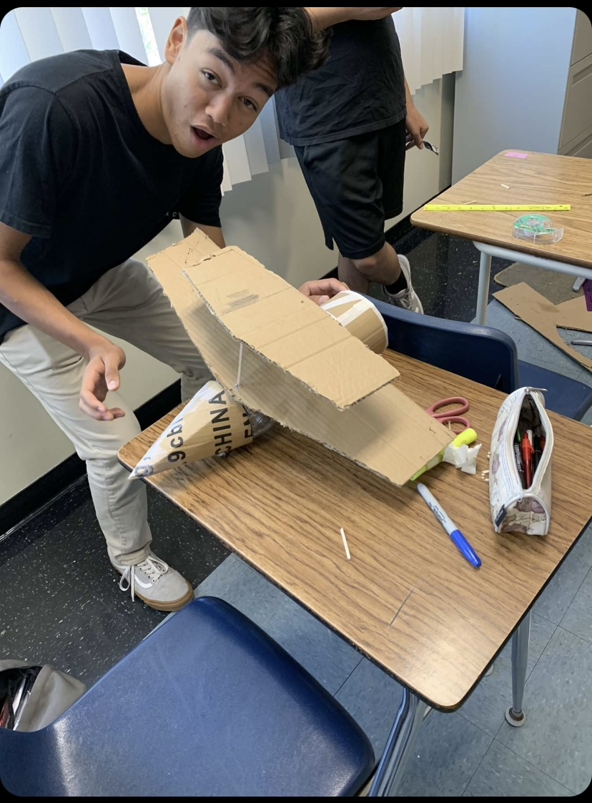
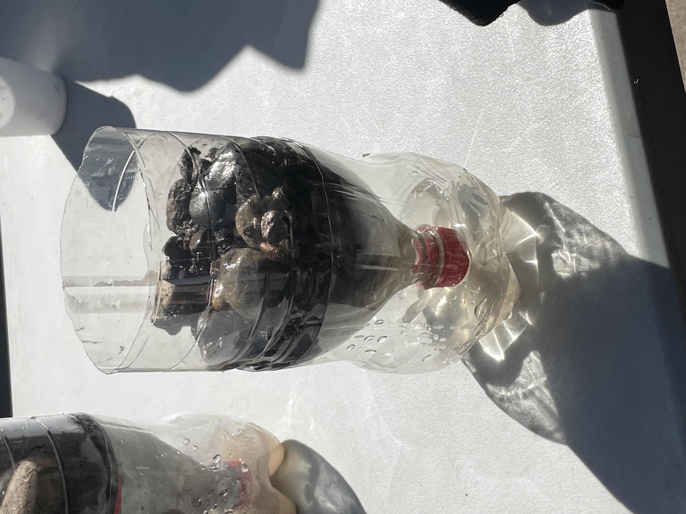
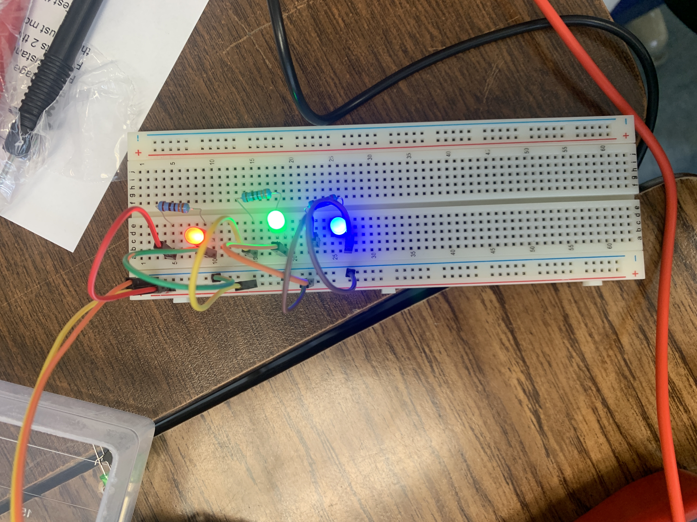
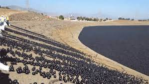
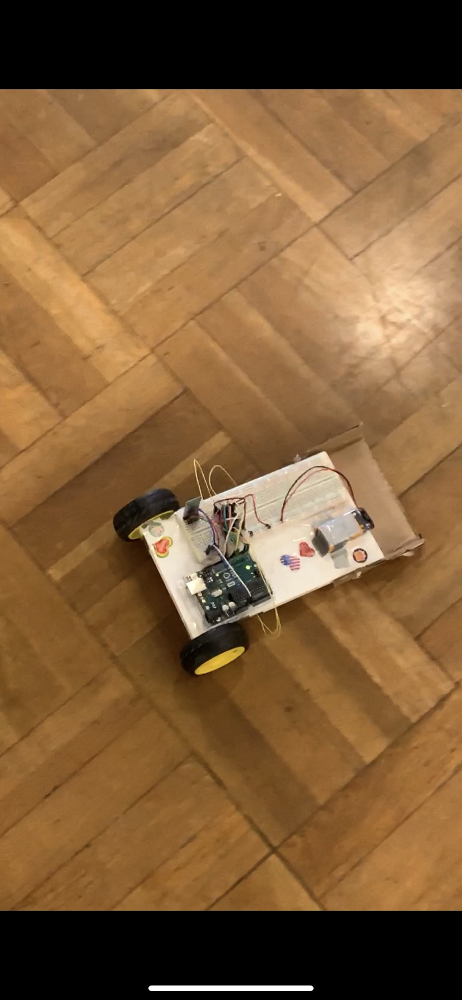

| Week & Date |
Blog |
Media |
| Week Two (9/2/22) |
This week there was plenty of new activities and things to learn.
I learned more about safety and was shown what type of tools we have in the schools'
workshop. We also learned CAD with tinkerCad. With this we will be creating a rube goldberg
machine model. We also had a challenge to replicate an object from home in tinkerCad. I attempted to create
a camera, but it did not look as nice as I would've wanted.
|
 |
| Week Three (9/9/22) |
This was a short week as we had monday off because of Labor Day and had a Friday minimum
day. This week we finished touching up our 3d models of the Rube Goldberg machines in TinkerCad.
This week's challenge was to accurately measure the letter 'E' onto a piece of paper.
We then traded with another person and had to redraw their measured 'E' and copy their measurements
and cut it out.I think I measured my letter 'E' very accurately in centimeters. |
n/a |
| Week Four (9/16/22) |
This week we began to start the building process of the Rube Goldberg Machine. Before that, We discussed as
a group to choose whose machine we would be building. We ultimately chose Linnea's machine as it was simple and
looked easy to build. We started to sketch out each panel of the machine on wednesday and by friday we were
putting the pieces of cardboard together. We almost finished on the friday but we had a slight issue with our
pulley that needed to be fixed. |
 |
| Week Five (9/23/22) |
This week consisted of working and finishing our Rube Goldberg Machine. We had basically finished on monday
but had to adjust the pulley to make the start sequence "hands free". We ended up tying the string to a bag
and cut it to start the machine. We finished completely on wednesday and tested it. It worked first try as seen in
the video below. Friday was a free day since we had already finished. I worked on this website and cleaned
the table of blogs up making it change colors on hover. We were able to visit the other class' machines and saw
how different theirs were to ours. |

Video
|
| Week Six (9/30/22) |
During This week we learned about a new type of engineering. Computer Engineering is where you design and
build computer parts. You have to code the hardware and correct firmware to tell the hardware what to speak
with and what they can or cannot do. Our challenge/lab for this week was to dissect a Laptop. These broken school
laptops were already at the end of their lifespan so no live laptops were harmed. This was fun and I learned that
I need to finish things on the same day or else I forget where things are supposed to go. |
 |
| Week Seven (10/7/22) |
This week we started a new type of engineering. Bio Engineering is a type of engineering that consists
of redesigning and producing things that will benefit or go into living objects. For our project this week we
made a tinker Cad design on a prosthetic that would go into an animal. I made a prosthetic paw for a red panda.
It would have been 3d printable and have a small pressure plate to make the fingers functioning. |
 |
| Week Eight (10/14/22) |
This week we begin a new type of Engineering. Aerospace engineering is creating parts of an airplane or
rockets. For example multiple companies work on one product that goes into a larger aircraft. For the project
we will be creating a model rocket with bottles. I will be 3d printing parts to attach onto the bottle using the
3d printer I have at home. I will have an aerodynamic nose with a low drag coefficient and a base with 3 fins to
help with stability without creating too much drag. |
 |
| Week Nine (10/21/22) |
During this week we started and finished building our model rocket. We redesigned the rocket so it looked more
like a biplane bottle. On friday we tested the rocket using pressurized air and water. Our rocket performed
terribly as it instantly went into a flip and continued to uncontrollably flip before landing a foot away from the
launch pad. I think our launch angle had the most to do with the failure. because our plane did glide well but
speed was an issue. |
 |
| Week 10 (10/28/22) |
Environmental engineering is something I learnt. In summary, engineering is used to solve engineering-related issues that result
in waste and pollution in the environment and other locations. Additionally, it may be used to the water
filters found in everyone's toilets. In a related project, we had to construct a water filter out of large rocks, small pebbles, sand, and tissue. The water
would flow through without a problem in that sequence, from top to bottom. The rocks removed the debris, while the sand and tissue removed the water's
impurities. The water seemed drinkable after going through this filter twice. |
 |
| Week 11 (11/4/22) |
This week we began learning about Electrical Engineering. We learned the basics of what they do and how to do it.
We then were able to learn how to build parallel and series circuits in tinker cad. This type of engineering interests me.
I am so far enjoying the problem-solving side of the circuits and following tasks. We also learned how to calculate
the resistance, voltage or current of a circuit using math and equations. |
 |
| Week 12 (11/11/22) |
This week we did a lab creating multiple circuits. We used a breadbread board and had an arduino for power
We created a parallel circuit as seen in the picture. We also made two series circuits. We were able to complete
all the circuits quickly and without error. I enjoyed being able to mess with how the circuit. I also created a circuit
utilizing the push button. |
 |
| Week 13 |
This week we coded our light sequences with an arduino. I learned how to code in arduinos language and
learned how to make new sequences. Using certain circuits you can make the light blink, fade or sequence one after
another. We were also able to toggle the sequence on and off using the button. |
N/A |
| Sem 2 Week 1 (1/13/23) |
I learned about the insides of business engineering. Some key takeaways were to appeal to the customer and to
basically be a manager for all designs and ideas relating to the customers. UI and UX are the two sides that
business engineers deal with, whether it be color grading or user information.
My group did a shark tank pitch. Our idea was to make a universal cap with a sleeve that kept your drink cold.
One problem we faced was the pricing of our product. Many people were unhappy because it was too high for them,
which was a factor we didn't consider. Overall, it wasn't too bad though compared to our other competitors and
managed to get some support. |
|
| Sem 2 Week 2 |
I discovered that chemical engineering can be used for almost anything, whether it be computers or perfume.
Chemical engineering is used in the majority of items, if not all of them, which makes it a fantastic employment.
Oil refinery and nanotechnology, where you work with atoms at a nanoscale where they are stronger and faster,
are two examples of interesting niches. After that, we completed a challenge to remove bromate from a lake,
which is made of water, chlorine, and sunlight. The answer we came up with was to employ shadow balls.
Most of the sunlight is blocked from reaching the lake by shade balls, which prevents bromate from forming. |
 |
| Arduino Car Project |
Because we all put in a lot of effort with the time we had, our assignment last week did fairly well.
We all worked as hard and as hard as we could to complete the job, and when we got stuck, we asked for help,
which undoubtedly contributed to our success. We fell short of our goals, primarily because we lacked access
to a third motor that would've enabled the car to turn. Additionally, we had trouble getting the bluetooth
to function because it was limited to Samsung devices, which we frequently lacked.
Our plan and our CAD were somewhat in sync, but we had to make a few adjustments because the 3D print was a
little bit smaller. Since nothing would have fit due to the smaller dimension, we also had to flip everything
over to the reverse side of the print, but we improvised and made it work.
I learned a lot more about how electrical engineering works and how to solder. One of the hardest challenges
I faced was trying to get the bluetooth working on the arduino. We had difficulties with power and getting
the bluetooth to turn on.
My group's duties were distributed fairly evenly. But during a significant portion of the project, one of our group members,
Will, was sick, which undoubtedly slowed us down. Will nevertheless made a significant contribution while he was working with us. He rewired the Arduino and figured out how to wire the Bluetooth.
He was here when we got stuck and got it right. I spent a considerable amount of time working entirely on the design.
Additionally, he always offered assistance and made an effort to establish a Bluetooth connection between the
phone and the vehicle. We constantly shared ideas with each other and were all cooperative members of the group
Tristan worked consistently on code and assisted with all aspects of the car.
|
 |
| Week 9 |
I constructed a gutter-boat with my crew. We chose to use balloons as propulsion, a flat surface to make it lift,
and a sail to aid the balloon in floating when we were designing. We constructed a raft with a sail on it and a
balloon to help it move forward. Because we didn't know how to use rubber bands, we decided to use balloons instead.
Testing our boat went poorly as the dimensions were slightly too big and our balloon popped instead of releasing
air slowly. |
image of a boat |